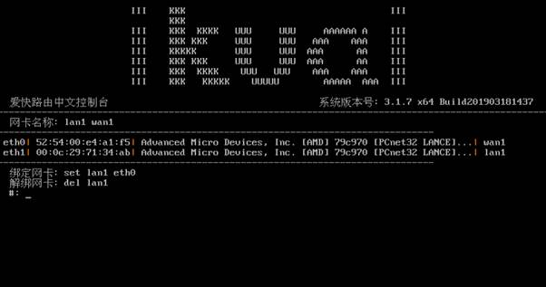

腾讯云服务器安装爱快软路由教程（傻瓜版）
腾讯云服务器安装爱快软路由教程（傻瓜版）
第一部分：先申请一个腾讯云主机
1、可以在实例列表里，点击一下 新建
2、计费模式 包年包月 按量计费 可以根据实际需要进行选择，还有云主机所在区域和可用区也可以按区选择就行了。还有网络类型有 基础网络 和 私有网络，具体有什么区别我也没有研究，不过我习惯选择 基础网络
3、爱快需要运行的操作系统是Ubuntu,但是我们既然是傻瓜版的教程，我们就全部用图形化的来操作，所以我们在申请的时候，先选择操系统为 Windows ，镜像版本为 Windows Server 2008 R2 企业版 SP1 64位 然后选择 下一步：选择存储和带宽
4、安装爱快路由器系统，不需要选择 数据盘，网络计费模式 可以选择 按带宽计费 （比较适合访问量比较高的用户），也可以选择 按使用流量（当然适合访问量较小的用户了），因为我这里是为了做教程，当然选择用 按使用量 来为例了
5、安全组 可以选择 新建安全组 再下拉列表里 选择 放通全部端口，当然这个安全组也可以在后续修改的，如果为了安全考虑，还是建议关闭一些高风险端口。再就是需要设置一下 密码 ，需要按提示达到输入密码的强度才可以，这个密码也是临时用一次就可以了。然后再点击 下一步：确认配置信息

6、最后就是确认 开通 了
7、创建好以后，就可以在实例列表里找到刚才创建的主机了
8、然后选择 主机 右侧的 登录
9、再接着选择 立即登录 然后在弹出的界面里可以看到如下图，我们可以选一下 发送远程命令的地方，选择一下
10、输入我们刚才设置的 复杂密码 然后就可以登录到系统了。这样就可以看到我们需要用到的相关的IP地址信息了。可以把这些 截图保存下来，因为一会需要用的着。
11、然后点击一下 右下角 打开网络和共享中心 然后点一下 本地连接 然后再点击一下 详细信息
12、以上方法只是通过Windows系统来查看相关的IP地址和MAC等相关信息，以上信息也是可以通过 Ubuntu系统里的命令来查看的，这样就可以省略掉安装Windows 2008系统的麻烦步骤了，直接安装Ubuntu就可以了。已经查好相关信息了，我们把系统再重装回 Ubuntu 吧。然后在实例列表里，更多 选项里 选择 重装系统

13、然后选择 公共镜像 里的 Ubuntu ，系统版本随便选择一下就可以了，接着就是再设置一下密码吧
14、最后点击 开始重装 至此云主机已经申请完成，并查询到了相关的IP地址和MAC地址信息
第二部分：通过 VMware Workstation Pro（VMware的安装过程我就不写了，如果需要的话，百度一下吧） 安装一下爱快软路由器，这个安装过程我还是赘述一下吧
1、选择 文件 菜单 新建虚拟机
2、以下几个步骤不解说了，直接看截图，光盘镜像里，选择一下 爱快的 ISO 镜像文件，在爱快的网站上有下载的
3、以下虚拟机的安装位置需要选择一下
4、磁盘大小一般设个2G以上就可以了，但也不要太大。下列选择 将虚拟磁盘存储为单个文件
5、点击完成以后，可以显示出已经创建好的 虚拟机
6、选择一下 编辑虚拟机设置
7、点击一下 网络适配器，把 网络连接 项选择 桥接模式 再选择 高级
8、然后在 MAC地址框里 输入我们第一部分看到的MAC地址，然后点击一下 确定
9、到 虚拟机设置 里再点击一下 添加 网络适配器
10、然后在 网络连接 里 选择 桥接模式
11、值得注意的就是，如果安装的爱快系统是64位版本的，那就需要把虚拟机的内存改成4G或更大一点，不然就会有以下的提示，不能安装
12、我们可以关闭虚拟盘，调整一虚拟机的内存大小，如果安装的是32位版本就不会有这样的提示了，可以跳过一步了，把内存调整好以后 确定 就可以了
13、然后在虚拟机里按一下8 1 ，再输入一下 y 键，就可以把爱快安装到虚拟机里了，安装完成以后，虚拟机会自动重启的
14、虚拟机启动好以后，然后在虚拟机里按一下 回车键
15、然后在爱快的控制台里 1、设置网卡绑定 设置一下网卡。把前面修改过MAC地址的网卡接口 eth0 绑定成 WAN1接口 ，再把 eth1 绑定成 LAN1 接口 （不要再问我怎么绑定哦，按一下1键以后，是可以看到提示的）

16、现在我们可以通过电脑火狐浏览器输入 192.168.1.1 打开路由器设置页面了
17、把路由器 WAN口设置成 第一部分的获到了的IP地址和网关（输入IP地址和网关的时候，要特别注意先择子网掩码，），然后再点一下 保存
18、接着在爱快的 网络设置 – DNS设置 里配置好前面获得到 DNS 的信息后，再点一下 保存
19、再接着在爱快路由器的设置页里 系统设置 里的 远程访问 然后把 WEB访问控制： 允许通过外网访问路由WEB管理界面 选项里 打勾并保存 (如果这项不打勾的话，没有办法通过外网访问路由器，反过来说，如果以后在配置路由器的时候，这项也不能去掉，不然路由器也就没有办法访问了) 然后把路由器系统关机。
20、然后再到 虚拟机设置 里提取 虚拟机硬盘 的镜像的文件（Ubuntu.vmdk），因为下部分操作步骤中需要把这个文件上传到腾讯云服务器上去。
第三部分：上传镜像并安装到云服务器
1、登录到腾讯云服务器控制台后，点一下 总览 然后 选择 对象存储服务
2、选择 存储桶列表 再点击一下 创建存储桶 ，输入一个 名称 ，然后选择一下 所属地域（建议和前面所选云服务器在同一个区域），然后点击 确定
3、接着 点击 上传文件 ，再接着浏览到前面导出的虚拟机的文件（Ubuntu.vmdk），然后点击 上传 按纽，等待上传完成
4、接着可以在上传完成后的文件列表里，点击一下 详细 ，再到 签名链接位置的 复制链接 上点击一下，复制一下镜像链接
5、然后再到 总览 里点击一下 云服务器 ，接着再到 镜像 里选择 导入镜像
6、点击一下 导入镜像 以后，把 我已做好以上准备上打勾，再点 下一步
7、可以按我下图中，填写相关的信息，但最下列一行 导入方式 一定要选择 强制 再接着点击 开始导入
8、导入完成以后，可以看到前面成功导入的镜像文件了
9、再点击 实例 ，到前面创建的 云服务器，再选择 重装系统 ，然后再选择 自定义镜像 ，接着在 镜像 选项卡里 选择前面导入 镜像文件 ，再点一下 开始重装 ，至此已经全部安装完成了
10、然后就可以通过外网的IP地址访问到爱快路由器系统了 http://115.159.82.18 (当然你们安装完成后的IP地址肯定不是这个)
11、现在已经可以正常使用了
总结：前些天也看到网上有另一个 阿里云的教程，他那个安装起来更方便，但是在目前爱快路由系统里配置外网的IP地址的时候，不能设置子网掩码，所以外网的IP地址和网关只能是相同的网段才可以，还有一点就是爱快路由系统默认是没有打开 外网的IP地址访问 的选项，所以就算路由器系统安装好，也不能通过外网来管理。
如果有小伙伴需要下载PDF版的 点击下载